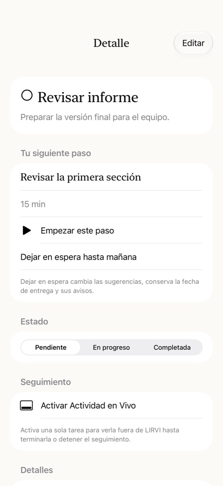

01
Sácalo de tu cabeza.Get it off your mind.
Una tarea puede ser más que un título. Añade notas, fechas, categorías, fotos y documentos para tener el contexto a mano.A task can be more than a title. Add notes, dates, categories, photos and documents to keep its context close.
